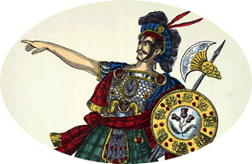

|
|
||||
|
|
Home | Corson Collection | Biography | Works | Image Collection | Recent Publications | Portraits | Correspondence | Forthcoming Events | Links | E-Texts | Contact Rob RoyFirst Edition, First Impression: Rob Roy. By the Author of "Waverley," "Guy Mannering," and "The Antiquary." In Three Volumes. Vol. I (II-III). Edinburgh: Printed by James Ballantyne and Co. For Archibald Constable and Co. Edinburgh; and Longman, Hurst, Rees, Orme, and Brown, London 1818 [i.e. 1817]. Composition | Synopsis | Reception | Links Composition
The contract was signed in May 1817, and in July 1817 Scott visited Rob Roy's cave at the head of Loch Lomond and Glen Falloch, in order to refresh his memories of the scene of the outlaw's exploits. Work on the novel began in August 1817, but progress was hampered by a recurrence of gallstone-related illness. Suffering from intensely painful cramps, Scott was forced to take high quantities of laudanum while dieting almost to the point of starvation. Astonishingly, it was under these conditions that Scott wrote perhaps the most fluently readable of all his stories. The novel was finished by early December 1817 and was published on the 30th of the month. SynopsisRob Roy is set against the backdrop of the Jacobite Rebellion of 1715, which aimed to restore the Stuart monarchy in the person of James Edward, the 'Old Pretender', son of the deposed James II. The tale is told in the first person by a young Englishman, Francis ('Frank') Osbaldistone. A would-be poet, Frank falls out with his father, William, due to his reluctance to enter the family business. Frank is sent north to Northumbria to stay with his Jacobite uncle, Sir Hildebrand Osbaldistone, and his place in William's counting house goes to Sir Hildebrand's scheming son Rashleigh. Frank falls in love with Sir Hildebrand's niece, Diana Vernon who lives in Osbaldistone Hall. Her father Sir Frederick, a proscribed Jacobite, lives there too in the guise of a monk, Father Vaughan. Sir Frederick has destined Diana for a convent unless she marries one of Sir Hildebrand's six sons. Diana, then, cannot listen to Frank's suit but, when Rashleigh flees to Scotland with vital financial documents, she assists him in his attempts to restore his father's honour and credit. Frank enlists the help of Bailie Nicol Jarvie, a Glasgow business correspondent of his father, and both proceed to the Highlands to bid Rob Roy, a political dependent of the Vernons, to intervene. Rashleigh is compelled to restore the company assets, and Frank returns to England where he is reconciled with his father. Meanwhile, the Jacobite rebellion breaks out. Sir Hildebrand's other five sons are all killed in the fighting, and he himself dies shortly afterwards of grief. Rashleigh, who has become an informer, is killed by Rob Roy during an attempt on Frank's life. Sir Frederick escapes to France, leaving Diana free to decide her future. The path is thus clear for Frank to inherit Osbaldistone Hall and marry Diana.  ReceptionCritical response to Rob Roy was almost unanimously favourable. For his power of characterization, Scott was now frequently compared with Shakespeare, with particular praise reserved for Bailie Nicol Jarvie and Andrew Fairservice, Frank's shrewd but cowardly manservant. The only substantial complaint on this count came from Francis Jeffrey in the Edinburgh Review, who perceived improbabilities in Scott's portrayal of Diana Vernon. Her manners, maturity and firmness of character, he argued, were unlikely given the society she grew up in. Readers, however, were enchanted by her boldness and wit. The novel was a tremendous commercial success, the original print run of 10,000, a huge figure for the time, being bought up in two weeks. LinksLast updated: 19-Dec-2011 |
|||